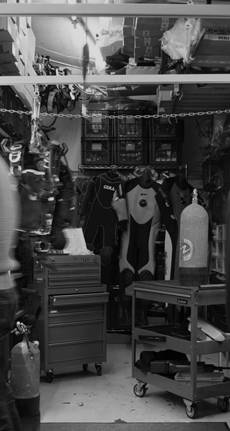
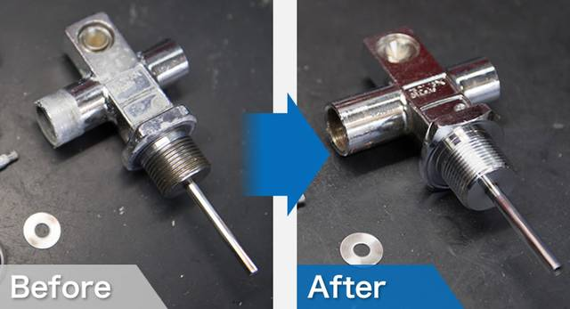
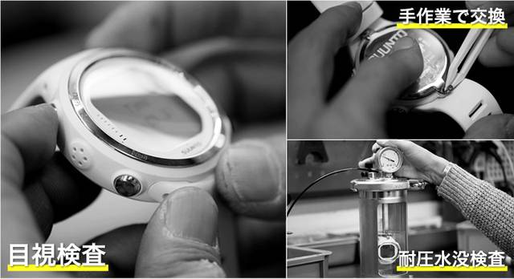

推薦1街のダイビング屋さんまちのダイビングやさん
心齋橋北邊博勞町的潛水器材專門店，新品、二手器材都賣，也收購二手器材。自家有維修工作室，做調節器、BCD、錶的 overhaul 和電腦錶換電池，也有器材租借。
- 營業
- 11:00–18:00
- 公休
- 週日（官網寫『日曜（オフシーズンのみ）』，11/1 週日大概率休）、黃金週・盂蘭盆・年末年始；11/3 國定假日官網未註明，建議先問
- 電話
- 06-6121-2123
- 地址
- 大阪府大阪市中央区博労町3-2-15
- 交通
- 長堀橋站 2-B 號出口，步行約 6 分（或 心斎橋站 クリスタ長堀 北6・北7階段，約 7 分）
2-B 出口上地面後往西北走約 500m，在博勞町 3 丁目巷內
- 新品＋二手器材買賣，也收購二手器材（有古物商許可）
- 自家工作室：調節器／八爪魚／儀表／BCD overhaul、電腦錶換電池
- 官網列出的品牌很多：SCUBAPRO、AQUALUNG、GULL、TUSA、mares、Bism、SUUNTO、Cressi 等
- 器材租借、器材保管服務
- 二手貨大多掛在 Yahoo!拍賣（賣家 diving_ya）和樂天網店，店裡現場的二手庫存不一定多，想看特定品項請先寫信（info@diving-ya.com）或打電話問
- 從天下茶屋搭堺筋線直達長堀橋（不用轉車），2-B 出口走約 6 分
- 官網寫的『心齋橋・長堀』路線：從クリスタ長堀地下街的北6／北7階段上地面，經 Hands 旁的加油站，沿單行道往北約 250m
- 0120-218-268 是日本國內免付費電話，用國外手機可能打不通，改撥 06-6121-2123
- 官網列的信用卡（VISA/Master/JCB/Amex/Diners）是網購付款方式，店面能不能刷卡、能不能免稅官網都沒寫，最好準備現金
- 建議排 10/29–10/31 或 11/2 上午去，週日不要去
資料來源：https://diving-ya.com/ https://diving-ya.com/hpgen/HPB/shop/shopguide.html https://diving-ya.com/hpgen/HPB/shop/business.html https://diving-ya.com/kaitori/shop/ https://diving-ya.com/maintenance/ https://map.yahoo.co.jp/v3/place/15jAztshdc2 https://www.openstreetmap.org/ (subway_entrance 2-B 座標)